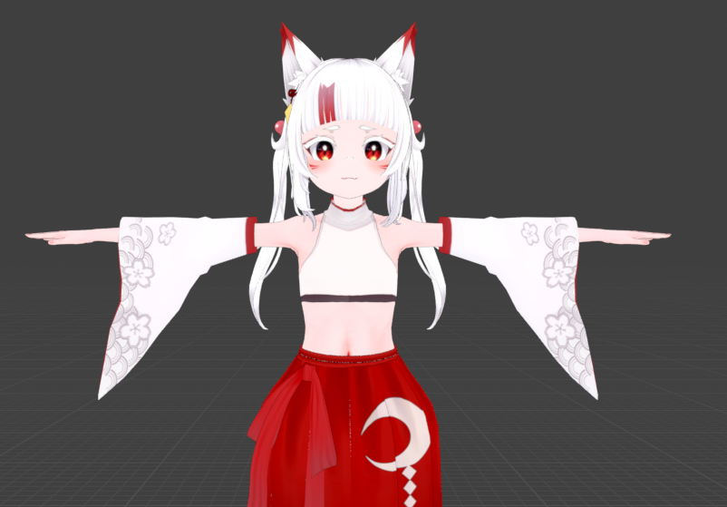

3D 캐릭터 제작
사용자의 요구에 맞는 3D 버추얼 캐릭터를 제작합니다.
나만의 버추얼 캐릭터를 만들고 실시간으로 만나보세요.
Virtual Character Studio는 사용자가 원하는 버추얼 캐릭터를 제작하고 실시간 콘텐츠에서 활용할 수 있도록 도와주는 서비스입니다.

사용자의 요구에 맞는 3D 버추얼 캐릭터를 제작합니다.
얼굴의 움직임과 표정을 버추얼 캐릭터에 실시간으로 적용할 수 있습니다.
완성된 캐릭터를 버추얼 방송과 다양한 실시간 콘텐츠에서 활용할 수 있습니다.
제작할 캐릭터 이름을 입력하고 신청 버튼을 눌러주세요.
캐릭터 이름을 입력한 뒤 신청해 주세요.